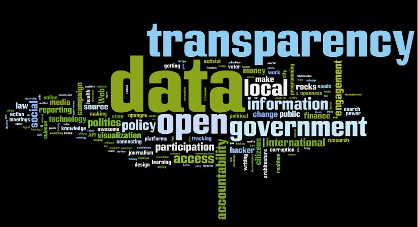

Nara Lawrence - Wasamundi.comWhat is Open Data?
- Free data for everyone, to be used and rebublished
- No copyrights, no restrictions
- No patents or other control mechanism
Why Feowl?
In 2009, Electrificatioin rate in Sub Saharan Africa was:
30.5% in Urban areas
14.2% in Rural areas
Even you with access suffer from frequent and untimely power cuts
2 surveys by the World bank:
Survey 1: 30 power cuts a year
Survey 2: 120 power cuts a year
The PROBLEM:
No data exists to show the real extent of the problem
No data exists that could hold power utilities to account
How do we understand, quantify and geo-localise the information on the energy demand in emerging large cities of Sub-Saharan Africa ?
FEOWL(read fuel) believes what can be measured can be changed
What is Feowl
Energizing fuel + watchful owlFeowl is a crowd-sourcing open data platform that produces reliable and actionable public data on the lack of electricity
How it works?
- Feowl is a bottom-up data collector that reflects the situation of every electricity user in Douala.
- Feowl mixes crowdsourcing and polling methods to produce the most accurate and relevant data.
- Feowl questions a panel of contributors regularly
3 QUESTIONS:
- How many power cuts did you have today?
- How long did they last?
- In which neighborhood were you?
FEOWL BETA and results
The results are found on www.feowl.com


How to install and use Feowl?
What next?
Phase II
- To increase number of polled users and span the whole Cameroon
- To study impact of these electricity shortages on Small and Medium sized enterprises
- To combine human crowd-sourcing and machine crowd-sourcing
Feowl Call-out
Involvement of: Public entities, Individuals, Civil society organizations, Media Participation People interested in Feowl: World Bank, Arsel to get an objective photography of the problem
Feowl powered by:
Internet Sans Frontieres (Paris)
Journalism++ (Paris)
TESOBE (Berlin)
Wasamundi (Buea, Cameroon)
YOU
Contacts
Julie Owono -julie@internetsansfrontieres.org Nara Lawrence -njielitumbe@wasamundi.com Quincy Kwende -quincykwende@wasamundi.com Jean-luc Nta -jeanluc@wasamundi.comTHANK YOU!